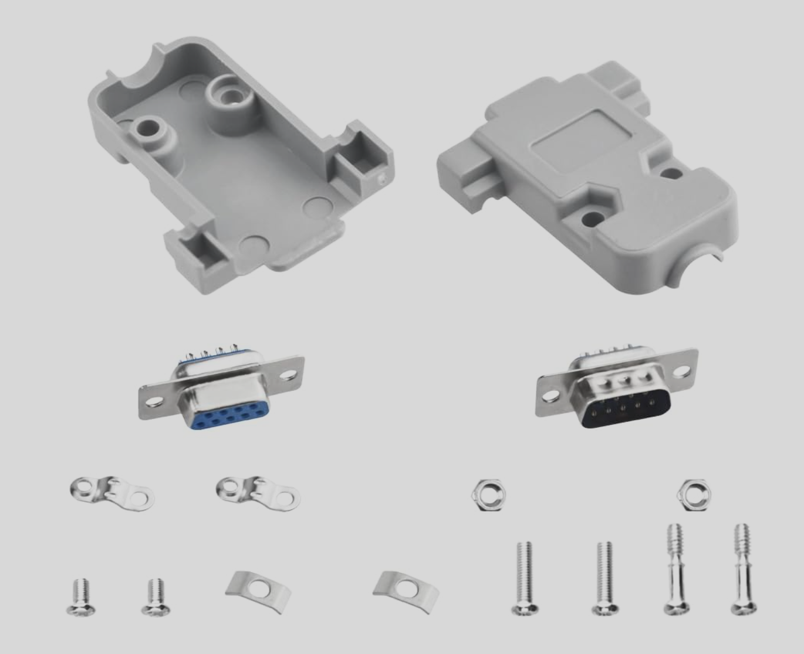
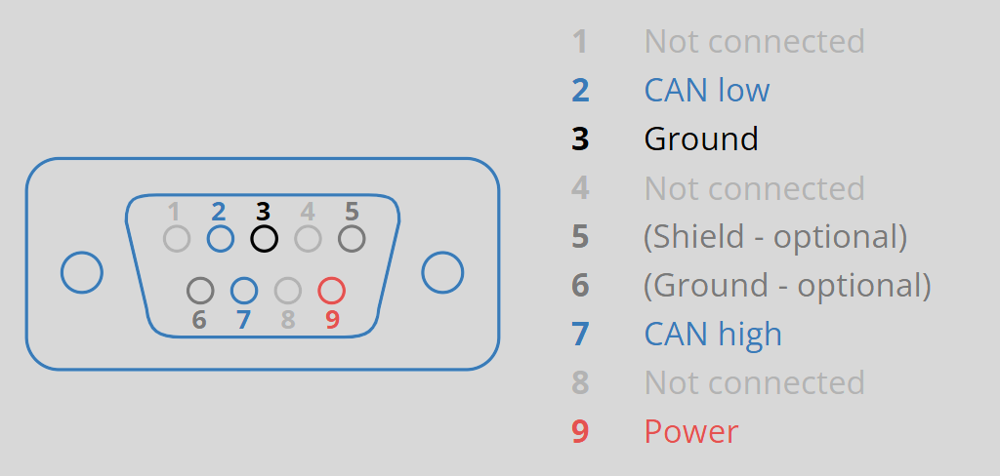
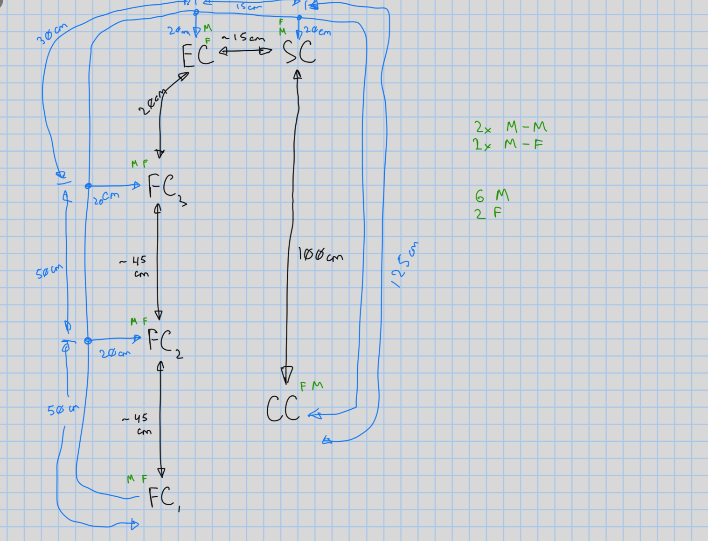
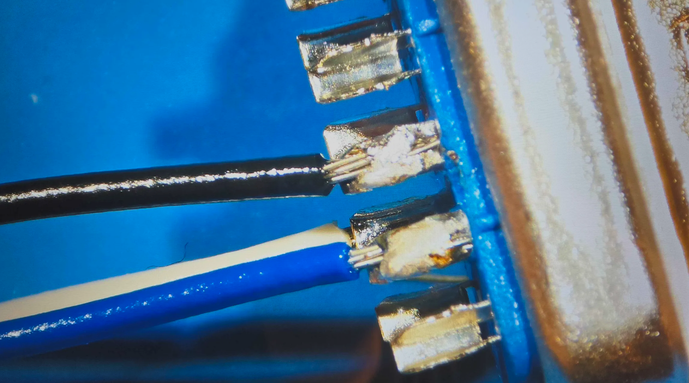
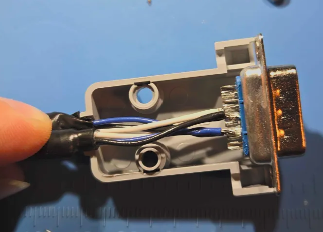
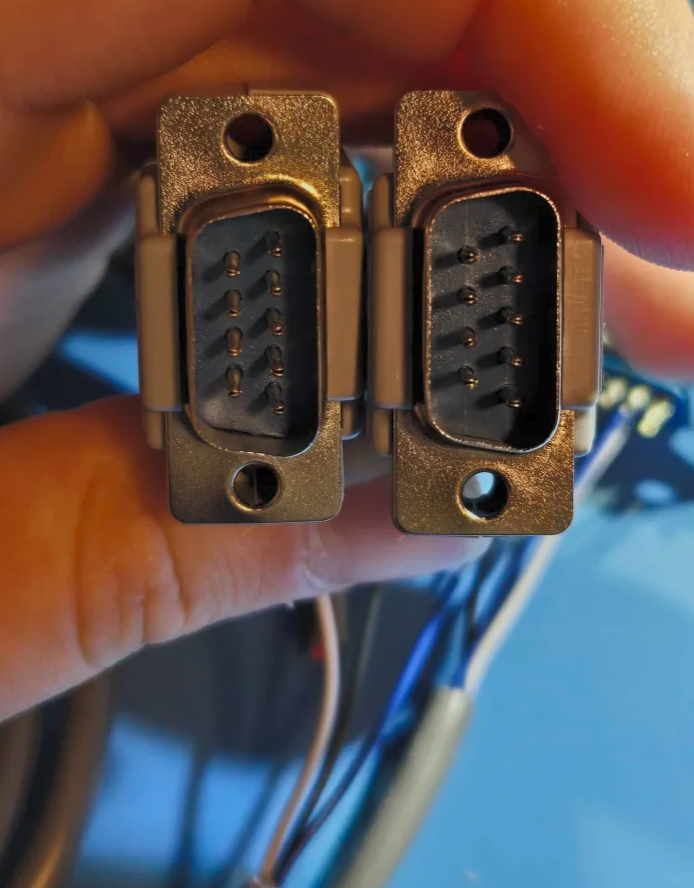
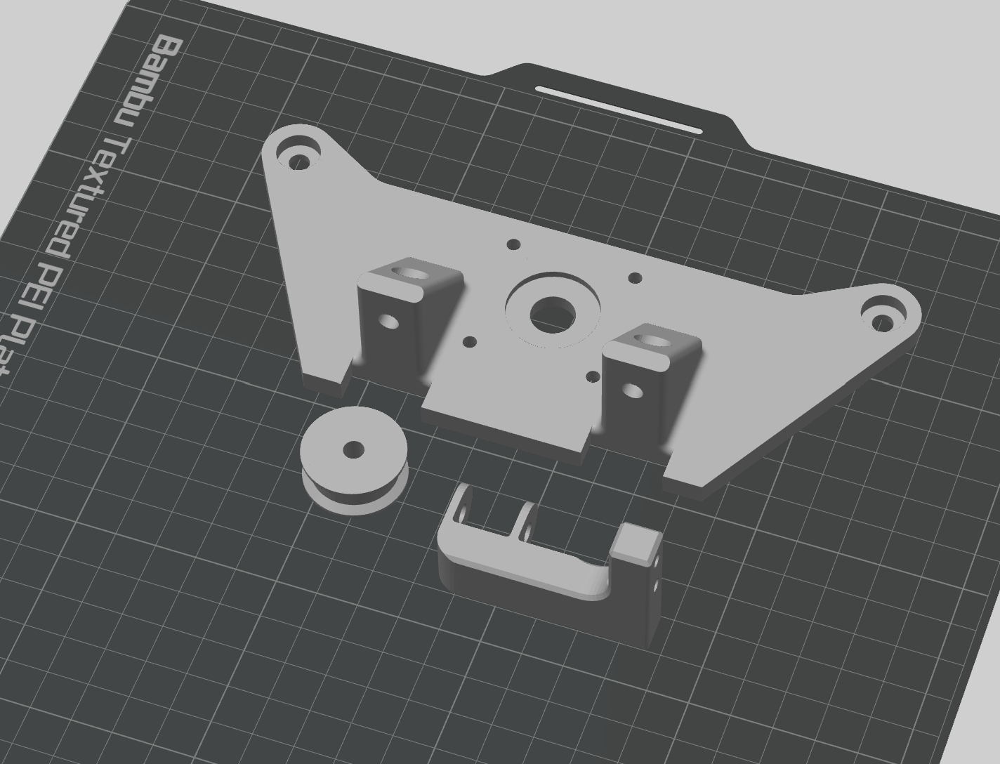

began to make the CAN bus cable and 3D printed a few more parts for the project
My logbook cover page- Ordered a DB9 quick connector kit off of Amazon that came with 15 male and 15 female DB9 heads, as well as 30 plastic casings that are easy to mount. They utilize screws for the casing so it allows for removal of the casing to double check or modify the wiring. Saved a lot of time, as the alternative was cable splicing

- stripped cable and soldered three colours to the DB9 connectors - white for CANH (pin 7 of DB9), blue for CANL (pin 2 of DB9), and black for GND (pin 3 of DB9)

- The cable lengths were defined by our elevator platform and discussed with MR. See attached image below:

- Soldered one cable, then connected two cables together in the next node (since everything had to be connected together). Followed diagram above for lengths and connector type. See progress images below:



- had to reprint the stepper motor mount due to heat damage
- printed mount for the drag chain
- reprinted a pulley out of PETG due to PLA being too brittle and overheating
